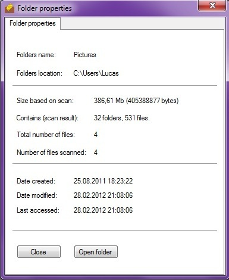

Displays the values for the selected folder.
Displays the values for the selected folder.
As shown in the screenshot, the values for the folders size, number of subfolders
and files is based on the scan, and may be in-accurate when compared to values
from Windows Explorer.
CleanMyFolder does not scan for hidden or system files, so the total number of files
may also be in-accurate when compared to values from Windows Explorer.
The purpose of this window is to display somewhat the same values as for files.
<Current version 1.0.0.0>